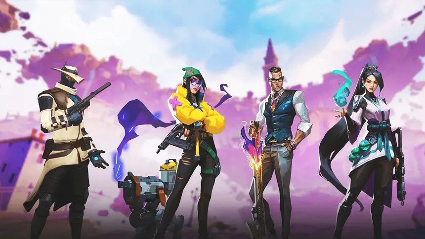

Como jogar de Sentinela?


Os Sentinelas são agentes focados em defesa, controle de áreas e proteção da equipe.
Eles
conseguem impedir avanços, detectar inimigos e proteger posições importantes.
Killjoy utiliza dispositivos automáticos para proteger áreas e detectar inimigos. É
excelente para
defender o local da Spike e impedir ataques rápidos.
Cypher é especialista em informação e vigilância. Suas armadilhas e câmeras permitem
detectar
movimentos inimigos, sendo muito útil para proteger as costas da equipe e controlar regiões do
mapa.
Sage possui habilidades de suporte e controle. Ela pode criar uma parede para bloquear
caminhos,
desacelerar inimigos e reviver um aliado com sua ultimate. É uma ótima escolha para quem prefere ajudar
a equipe e controlar o ritmo da rodada.
Chamber(Meu peresonagem preferido) é um Sentinela mais voltado para combates e
defesa individual. Ele pode criar um
ponto
de teletransporte para escapar rapidamente e possui armas próprias que facilitam os confrontos à
distância.
Deadlock utiliza dispositivos para impedir a movimentação dos inimigos. Suas habilidades
conseguem prender ou desacelerar adversários, sendo útil para proteger entradas e dificultar
ataques.
Vyse é especializada em controlar áreas e separar inimigos. Suas habilidades podem prender
adversários e criar situações em que eles ficam vulneráveis, tornando-a eficiente para defender locais
estratégicos.
Veto é focado em controle de área e proteção durante os confrontos. Suas habilidades
permitem
criar situações mais seguras para sua equipe e dificultar o avanço dos inimigos. Ele é especialmente
útil para jogadores que gostam de controlar espaços e dar suporte ao time enquanto defendem uma
posição.